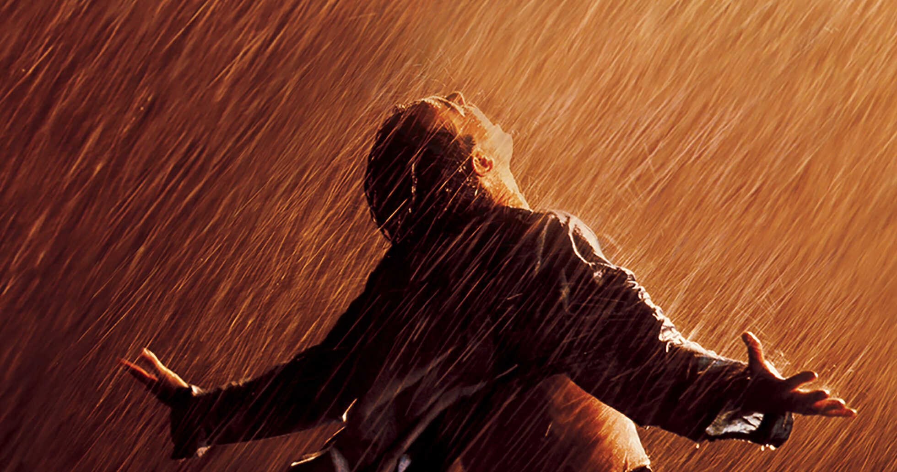

The Shawshank Redemption
üìÖ 9/23/1994
⭐ 9.3
⏱️ 2h 22m
Wrongfully convicted of murder, banker Andy Dufresne is sentenced to life at Shawshank State Penitentiary. Over decades, he builds an unlikely friendship with fellow inmate Red and finds hope and redemption through acts of quiet defiance and perseverance. Based on a novella by Stephen King, this timeless classic stars Tim Robbins and Morgan Freeman.